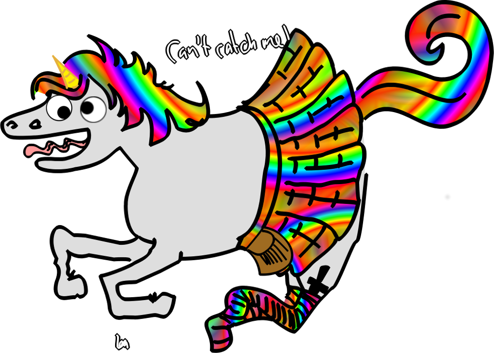

We're a travelling hacker collective from Scotland who represent ourselves and our country at events round the world.
We aim to provide a chilled out, primarily social workspace in the mania of hacker camps and conferences for people to visit, stay, contribute to and share.
We run Scottish themed events in partnerships with other villages / assemblies we're friends with - whisky tastings, food nights, etc.

Except where otherwise noted, content on this website is licensed under the following license: CC Attribution-Share Alike 4.0 International.